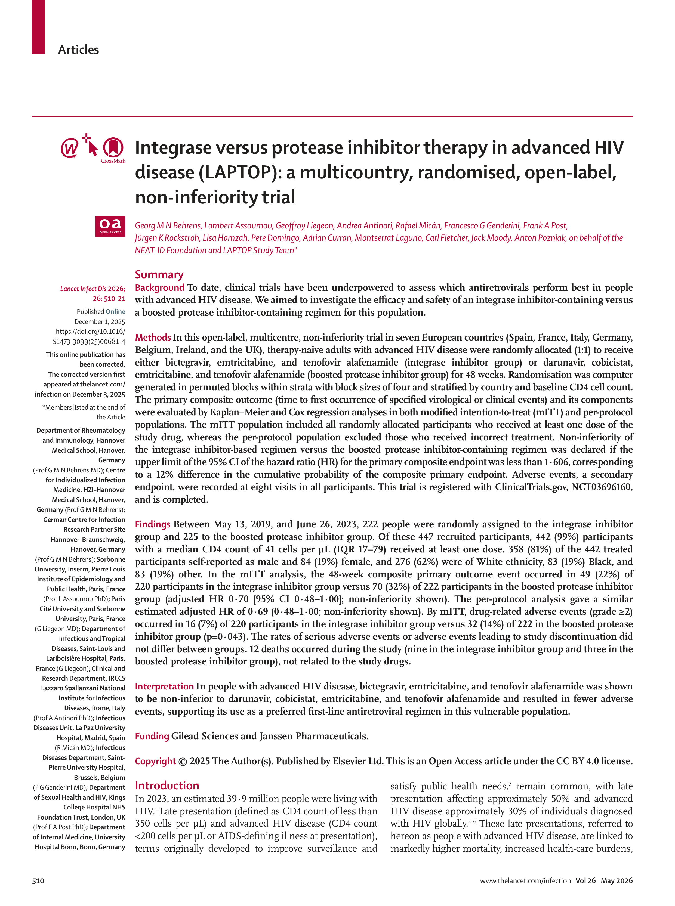
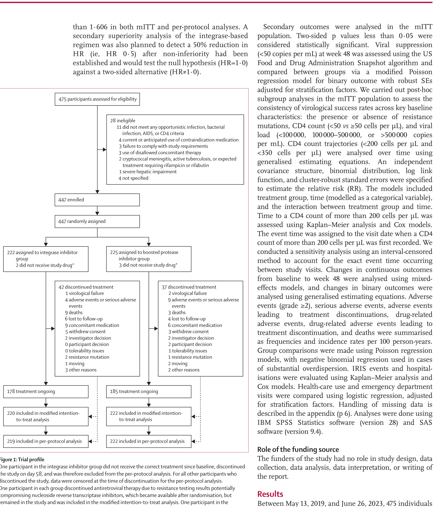
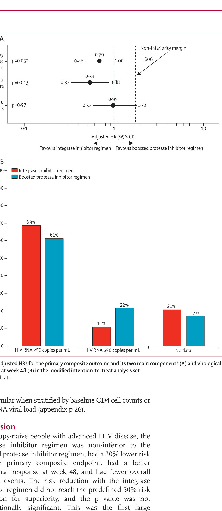
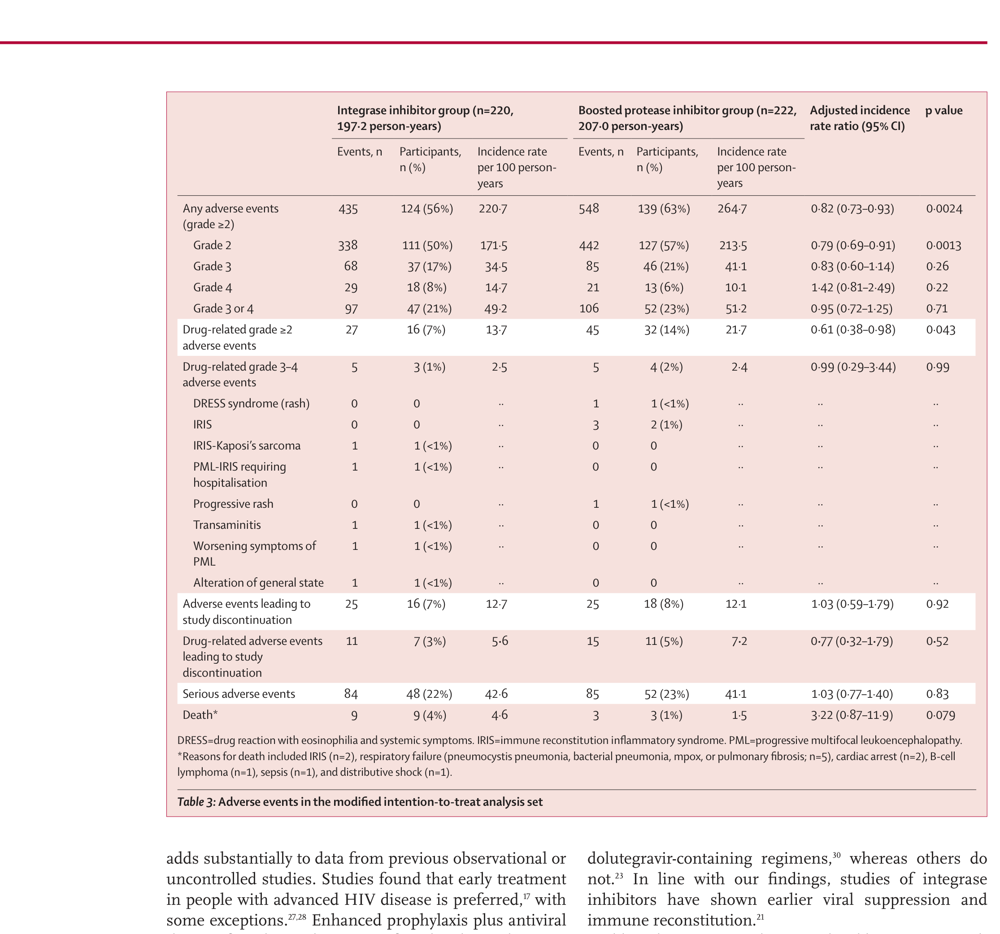

Behrens GMN, Assoumou L, Liegeon G, et al.
Terapia con inhibidor de integrasa frente a inhibidor de proteasa en enfermedad por VIH avanzada (LAPTOP): ensayo multinacional, aleatorizado, abierto, de no-inferioridad. Lancet Infect Dis 2026;26:510-21.
César Copaja-Corzo, MD. MSc.
Residente de Infectología y Medicina Tropical

Como esta charla es de lectura crítica radical y vamos a cuestionar duramente este artículo, declaro primero mis vínculos académicos y financieros.
| Institución | Rol | Estado |
|---|---|---|
| USIL | Investigador asociado | Activo |
| UCSUR | Investigador asociado | Descontinuado |
| UPT | Investigador asociado | Descontinuado |
| ROE | Análisis de datos de laboratorio | Descontinuado |
| EviSalud | Docencia en investigación | Descontinuado |
El VIH avanzado afecta al ~30% de nuevos diagnósticos globalmente. Solo el ~10% de los pacientes en ensayos pivotales de primera línea tenían CD4 <200. "Ningún ensayo aleatorizado grande ha comparado regímenes de primera línea específicamente en VIH avanzado." Comparamos bictegravir/FTC/TAF (Biktarvy®) frente a darunavir/cobicistat/FTC/TAF (Symtuza®).
Capturar un nicho de mercado no conquistado por Biktarvy®: la primera línea en VIH avanzado (CD4 <200), donde existían dudas históricas sobre los inhibidores de integrasa por riesgo de IRIS y rebote en inmunodeprimidos severos. Generar evidencia aleatorizada que justifique posicionar Biktarvy® como "preferido" en guías globales (EACS, IAS-USA, DHHS).
El "vacío" se construye con cita selectiva. El comparador estándar OMS — dolutegravir genérico + TDF/3TC (TLD) — está ausente del marco conceptual. La pregunta clínica honesta sería "¿Biktarvy supera a TLD en VIH avanzado?", no "¿es no-inferior a Symtuza?". La elección del comparador define qué pregunta responde el ensayo.
Antes de entrar a métodos: los cinco lentes con que vamos a leer todo lo que sigue.
| # | Sesgo | Dónde se filtra |
|---|---|---|
| 1 | Diseño abierto (open-label) | Sin enmascaramiento. Sesga el reporte de eventos adversos subjetivos a favor del brazo "nuevo". |
| 2 | Margen de no-inferioridad permisivo | HR 1.606 (≈12% absoluto). Casi cualquier régimen razonable pasa. Los ensayos clínicos de VIH típicos de la FDA usan diferencias de proporción de 10-12%. |
| 3 | Desenlace compuesto heterogéneo | Mezcla muerte, evento AIDS, IRIS, falla virológica e interrupción de fármaco >5 días. Componentes de severidad muy distinta — el efecto puede concentrarse en el más blando. |
| 4 | Conflicto de interés estructural | Gilead y Janssen financian el ensayo y aportan los fármacos. Más de 40 autores reciben honorarios de ambos patrocinadores simultáneamente. |
| 5 | Comparador no estándar OMS | El estándar global de primera línea es dolutegravir genérico + TDF/3TC (TLD). Está ausente del ensayo — la comparación es entre dos productos patentados. |
| Lo que el paper hizo | Por qué importa |
|---|---|
| RCT abierto, multicéntrico, no-inferioridad. 56 sitios en NEAT-ID Network · 7 países europeos. | Sin cegamiento + red europea homogénea. Difícil extrapolar a contextos LATAM/África. |
| 447 aleatorizados 1:1. Bictegravir/FTC/TAF (Biktarvy®) vs Darunavir/cobi/FTC/TAF (Symtuza®). 48 semanas. | Comparador del mismo dueño: Gilead patrocina y aporta Biktarvy; Janssen aporta Symtuza. DTG genérico (TLD) ausente. |
| Población: sin tratamiento antirretroviral previo, ≥18 años, VIH avanzado por una de 4 vías (evento definitorio de SIDA · CD4 <200 + infección bacteriana severa · CD4 <100 · infección oportunista activa). | Las 4 vías son clínicamente muy distintas. Mezclar candidiasis esofágica + CD4 600 con CD4 30 + neumonía produce heterogeneidad. |
| Exclusiones: tuberculosis activa o esperada, meningitis criptocócica, quimioterapia activa, hepatopatía Child-Pugh C, embarazo/lactancia. | TB y criptococo son las dos OI más letales en VIH avanzado en LATAM/África. Se excluye exactamente la población donde Biktarvy se complica más (rifampicina ↓BIC −75%). |
| Aleatorización 1:1 en bloques permutados de 4, estratificada por país y CD4 basal (<50, 50-199, ≥200). | Aleatorización correcta — pero sin enmascaramiento, todo lo que pasa después de la línea de salida queda expuesto a sesgo de detección. |
| Adherencia: autorreporte en visitas semanas 12, 24, 36 y 48. | El autorreporte sobreestima la adherencia ~20%. Sin conteo de pastillas, sin niveles plasmáticos, sin monitoreo electrónico (MEMS). |
| Lo que el paper hizo | Por qué importa |
|---|---|
| Desenlace primario compuesto: falla virológica (carga >50 sem 48 o reducción <1 log a sem 12) o evento clínico (muerte VIH, AIDS, OI, IRIS, AE que requiera interrupción >5 días). | Mezcla muerte con "interrupción de pastilla >5 días". Dureza muy distinta. Si el efecto se concentra en el componente blando, el "ganador" no necesariamente lo es en mortalidad. |
| Margen de no-inferioridad: HR 1.606 (≈12% diferencia absoluta acumulada). | Margen extremo permisivo. HIV trials FDA típicos usan 10-12% absoluto, pero con HR cercano a 1.3-1.4. Aquí casi cualquier régimen razonable pasa. |
| Tamaño muestral: 440 pacientes (220 por brazo). Asume 25% eventos en PI, 23% en INI · α 0.05 dos colas · poder 80%. | Si el margen fuera 1.3 (más estricto), el N requerido subiría a varios miles. La elección del margen es la primera decisión calibrada del trial. |
| Análisis: Cox proporcional ajustado por país y CD4 basal <50. Análisis primario en mITT y per-protocolo. | Correcto. La regla en NI exige que ambos análisis (mITT y per-protocolo) converjan — y aquí coinciden. Esto sí está bien hecho. |
| Subgrupos: declarados post-hoc en métodos (presencia de resistencia, CD4 <50 vs ≥50, carga viral basal). | Subgrupos post-hoc sin corrección por multiplicidad. "Consistencia entre subgrupos" no es prueba de homogeneidad real. |
| Comité de revisión de desenlaces clínicos: independiente, confirmaba todos los eventos clínicos antes de contarlos. | Es el único contrapeso al diseño abierto. Pregunta abierta: ¿en qué versión del protocolo se formalizó? El protocolo tuvo 5 versiones — revisar el suplemento. |

Figura 1 · LAPTOP trial profile (Behrens 2026, p.514)

Figura 2A · aHR del desenlace primario y sus componentes (p.517)

Tabla 3 · Eventos adversos en mITT (p.518)
"En personas sin tratamiento antirretroviral previo con enfermedad por VIH avanzada, el régimen de inhibidor de integrasa fue no-inferior al régimen de inhibidor de proteasa potenciado, tuvo un riesgo 30% menor para el desenlace primario compuesto, mejor respuesta virológica a las 48 semanas, y menos eventos adversos. Estos hallazgos apoyan su uso como régimen antirretroviral preferido de primera línea en esta población vulnerable."
La frase "apoyando su uso como régimen preferido de primera línea" es lenguaje copia-pega para guías clínicas (EACS, IAS-USA, DHHS). El resumen abre con "30% menos riesgo… menos eventos adversos" antes de mencionar p=0.052. Las muertes triples se reportan como "numéricamente mayores". Es la fórmula clásica del spin (sesgo de presentación): énfasis en el desenlace secundario favorable, lenguaje suavizado para los hallazgos negativos, y conclusión lista para incorporar en guías.
Spin documentado por Boutron 2010 (JAMA 303:2058-64) — afecta al ~50% de los RCT con primario no significativo. Aquí están las 6 técnicas activas: énfasis selectivo en secundario · suavizado del p=0.052 · conclusión que excede los datos · cita selectiva de IRIS (Hill 2018 cancela a Wijting 2019) · subgrupos post-hoc presentados como "consistencia" · tratamiento minimalista de 3× muertes ("numerically higher").
"El estudio LAPTOP fue apoyado por la NEAT-ID Foundation, una fundación sin fines de lucro... Gilead Sciences fue el patrocinador de este ensayo iniciado por investigadores y proveyó soporte financiero, así como el suministro del fármaco del estudio (Biktarvy). Janssen Pharmaceuticals también proveyó soporte mediante el suministro del fármaco del estudio (Symtuza) y fondos para los costos asociados de manejo del fármaco. Los patrocinadores no tuvieron rol en el diseño del estudio, recolección de datos, análisis, interpretación, o escritura del reporte."
La etiqueta "iniciado por investigadores" es cosmética contable. La frase "sin rol" cubre la ejecución, no el diseño — y es en el diseño donde se decide qué comparador usar, qué margen elegir, qué población excluir. Más de 40 autores reciben honorarios de Gilead Y Janssen al mismo tiempo; el redactor médico (Julia Granerod, Dr JGW Consulting) lo paga típicamente el patrocinador. NEAT-ID es la bata académica que legitima el cofinanciamiento.
La crítica no es "la industria pagó = ensayo inválido". Es arquitectura específica: comparador no estándar (no dolutegravir) · margen amplio (1.606) · exclusiones que protegen al producto del patrocinador (tuberculosis, criptococo) · desenlace compuesto heterogéneo · lenguaje listo para guías en la discusión · autores en comités asesores de ambos patrocinadores. Cada decisión por separado es defendible. Las seis juntas configuran un patrón — y ese patrón coincide con la estrategia comercial de Gilead para capturar el VIH avanzado en primera línea.
"Aunque comparamos dos regímenes de pastilla única con espinazos idénticos de inhibidor de transcriptasa reversa, nuestros resultados son probablemente relevantes a otros regímenes de tres drogas de primera línea conteniendo dolutegravir en personas con enfermedad por VIH avanzada y podrían potencialmente informar guías globales de tratamiento. Costo y problemas de acceso pueden restringir la generalización en escenarios con recursos limitados."
Los autores reconocen entre líneas que el mismo resultado se sostendría con dolutegravir genérico (TLD) — pero entonces sin incentivo de mercado para Biktarvy®. La frase "podrían informar guías globales de tratamiento" es la autopista hacia EACS, IAS-USA, DHHS. Para Perú: si la próxima guía cita "Biktarvy preferido en primera línea", la presión sobre EsSalud/MINSA será comprar el producto patentado en lugar de seguir con TLD.
Eventos clínicos: HR 0.99 — TLD genérico es clínicamente equivalente. (1) No hay justificación para reemplazar TLD por Biktarvy con base en este ensayo. (2) Inicio rápido de TARV sí es transferible (Boulware 2014). (3) Tuberculosis activa NO se excluye en la práctica — se ajusta dosis (rifampicina + dolutegravir 50 mg cada 12 h, INSPIRING 2020). (4) Criptococo: tratar primero, TARV a las 4-6 semanas (estrategia COAT 2014). El sobrecosto de Biktarvy frente a TLD no se justifica por los datos del propio ensayo.
11 preguntas para aplicar a cualquier paper antes de cambiar tu práctica.
| 1 | ¿El artículo ha sido revisado por pares? | Sí No |
| 2 | Basado en la afiliación del autor o la fuente de financiamiento, ¿existen conflictos de interés? | Sí No |
| 3 | ¿Están claramente definidos la pregunta de investigación o los objetivos del estudio? | Sí No |
| 4 | ¿El diseño del estudio es apropiado para la pregunta de investigación? | Sí No |
| 5 | ¿Está justificado el tamaño de muestra? ¿Es representativo de la población objetivo? | Sí No |
| 6 | ¿Los investigadores describen la metodología de recolección de datos? | Sí No |
| 7 | ¿Se describen claramente los parámetros y medidas utilizadas? | Sí No |
| 8 | ¿Se utilizaron métodos estadísticos apropiados? | Sí No |
| 9 | ¿Se da respuesta a la pregunta de investigación o a los objetivos del estudio? | Sí No |
| 10 | ¿Se tomaron en cuenta los factores de confusión? | Sí No |
| 11 | ¿Las conclusiones de los autores fueron sólo acerca de los grupos representados en la investigación? | Sí No |
Preguntas y discusión.